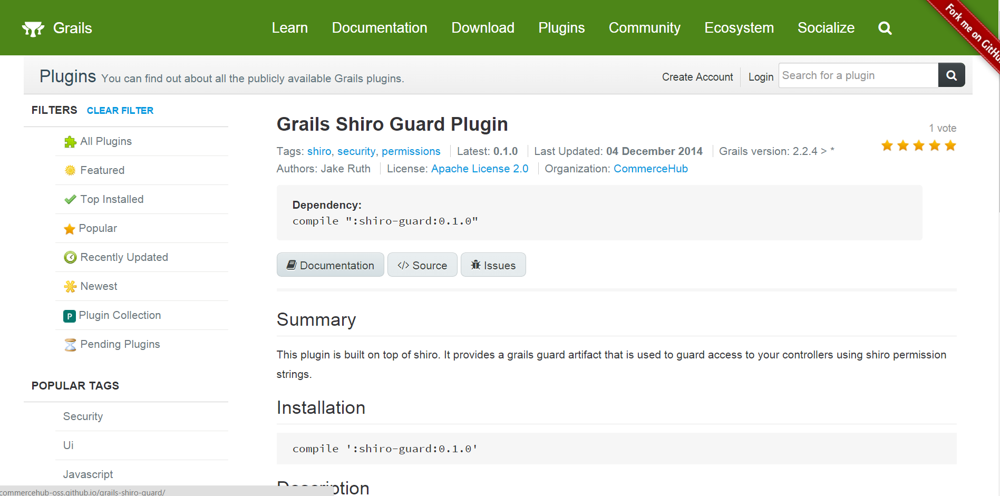
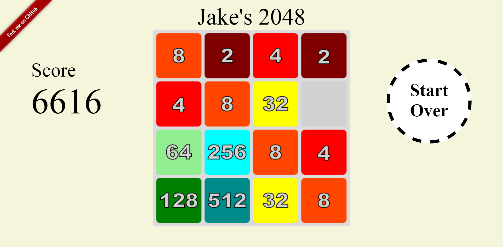
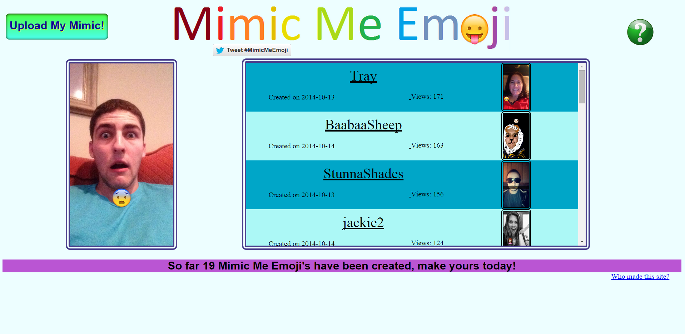

Here are some projects I've worked on

When I was interning full time with CommerceHub during the summer of 2015
a big project I undertook was creating a Grails plugin. The plugin is called Grails Shiro Guard, it uses the power of
the Shiro java application security framework to dynamically add permission strings to a users cache as they navigate
through a website. The plugin is available from the Grails plugin repository for any Grails user to incorporate into their
own projects. The plugin is also open sourced and has full documentation, all which can be accessed from the plugin's
landing page in Grails (link on photo to the left).
I re-coded the game 2048 as an html5 compliant web browser game (no flash).
I was inspired to re-code the game was because when I played the app version, the animations were too slow and it
slowed down my game play. I used KineticJS
(no longer supported unfortunately), and I also did
not look at the source code for the original game. The emotional roller coaster I endured while debugging
the game was a learning experience I will not soon forget. Lastly, I made the tile animation
extremely fast (.03 seconds) on purpose, so that the user could play the game as fast as possible, without glitches.
Button mash away!


MimicMeEmoji is an idea that was inspired by one of my friends. My friend would take snaps of herself mimicking the faces of emojis
and overlay the emoji on her face. I decided to create a web application after tons of my friends raved about how
cool and funny they thought the idea was. On the website you can upload multiple photos of yourself mimicking emojis.
To create this I used Grails with mongodb, and amazon s3 for image storage.
The response I received from this website was below what I expected, I realized
that this is way better suited for an app, I have plans to create an app version in the future.